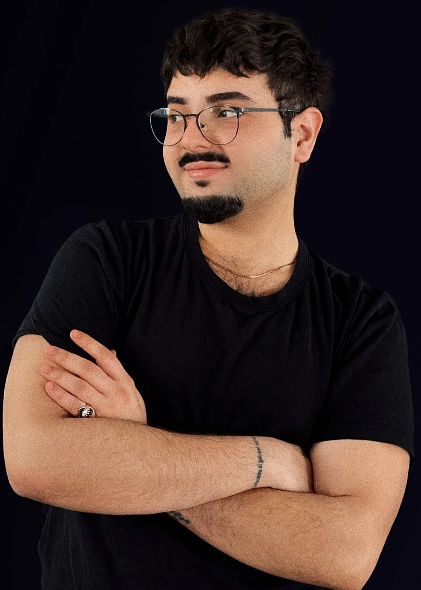

I help companies transform high friction digital products into experiences people understand, trust, and move through with confidence. Product design, UX research, and frontend work — from strategy to shipped code.

Full product scope on a dual-identity luxury beach destination in Albania. Brand identity from scratch, 3D animated hero, full Figma design system (60+ components), high-fidelity designs across 13 pages, and direct frontend implementation oversight. Solo role with full product and dev team accountability.
Deployed a new design system and visual identity across the company creation flow (100+ screens) in a live operational SaaS. Worked across audit, component design, layout templating, and complete flow prototyping in close synchronicity with developers and the CPO. CSUQ validated post-launch.
Complete redesign of 15 conversion funnels following usability audits and user interviews. Designed conversion optimised landing pages built around hierarchy, trust signals, and friction reduction. All outcomes tracked through Amplitude and behavioural data analysis.
Built and maintained the Figma component library as part of an evolving design system, contributing to a 10% gain in team execution speed. Used generative AI and MCP driven workflows to scale template production, turning manual repetition into automated quality at 50+ outputs.
I'm Anis Slimani, a product designer based in Paris. I've led a luxury venue from blank brief to shipped website, and redesigned complex SaaS flows inside a live operational product. Both required the same discipline: understand the system completely before touching it.
I like working on things that are genuinely complex — multi-step flows, dense information, products where getting the details wrong actually matters. I write frontend code and work directly with AI tools in production. That combination lets me close the gap between what's designed and what ships.